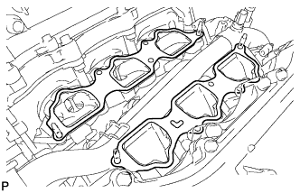
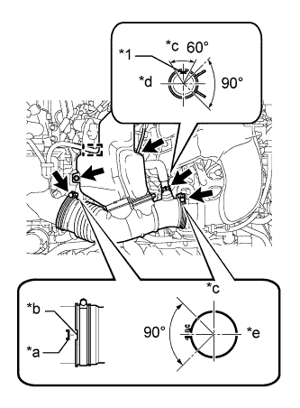

ВПУСКНОЙ КОЛЛЕКТОР > УСТАНОВКА |
| 1. УСТАНОВИТЕ ВПУСКНОЙ КОЛЛЕКТОР |
|  |
На каждую головку блока цилиндров установите новую прокладку.
Установите впускной коллектор на головки блока цилиндров.
 |
Вверните 6 болтов и 4 гайки и равномерно затяните их в несколько этапов.
| *1 | Гайка |
| 2. УСТАНОВИТЕ ТОПЛИВНУЮ РАМПУ В СБОРЕ |
Разместите топливную рампу с 6 топливными форсунками на впускном коллекторе.
Временно вверните 6 болтов, используемых для крепления топливной рампы, в впускной коллектор.
 |
Убедитесь, что форсунки вращаются плавно.
| *1 | Поверните |
Расположите топливные форсунки так, чтобы разъемы были направлены наружу.
Затяните 6 болтов.
Подсоедините 6 разъемов топливных форсунок.
| 3. УСТАНОВИТЕ РАСШИРИТЕЛЬНЫЙ БАЧОК НА ВПУСКЕ ВОЗДУХА |
Установите новую прокладку в расширительный бачок на впуске воздуха.
 |
Установите расширительный бачок на впуске воздуха и закрепите его 4 болтами и 2 гайками в порядке, показанном на рисунке.
| *1 | Гайка |
Установите опору расширительного бачка № 1 и закрепите ее 2 болтами.
Закрепите зажим жгута проводов.
Установите опору расширительного бачка № 2 и закрепите ее 2 болтами.
Установите корпус дроссельной заслонки и закрепите его 2 болтами.
 |
Подсоедините шланг вентиляции картера № 1.
Подсоедините разъем электровакуумного клапана № 1.
Подсоедините шланг подачи топлива № 1.
| *a | Передняя сторона |
| *b | Метка |
| *c | Верх |
 |
Подсоедините разъем корпуса дроссельной заслонки.
Подсоедините перепускной шланг охлаждающей жидкости № 4.
Подсоедините перепускной шланг охлаждающей жидкости № 5.
Подсоедините 2 хомута шланга отопителя.
| *a | Передняя сторона |
| *b | Метка |
| *c | Правая сторона |
| 4. УСТАНОВИТЕ ВОЗДУШНЫЙ ПАТРУБОК (для моделей со вспомогательной системой подачи воздуха в нейтрализатор) |
 |
для ряда 1:
Совместите нанесенные краской метки с выступом и подсоедините воздушный патрубок к комплекту клапана системы снижения токсичности отработавших газов.
| *1 | Ребро |
| *2 | Метка, нанесенная краской |
| *a | Правая сторона |
| *b | Верх |
 |
для стороны ряда 2:
Совместите нанесенные краской метки с выступом и подсоедините воздушный патрубок к комплекту клапана системы снижения токсичности отработавших газов № 2.
| *1 | Метка, нанесенная краской |
| *2 | Ребро |
| *a | Верх |
| *b | Левая сторона |
Заверните 3 болта.
| 5. УСТАНОВИТЕ ШЛАНГ ВОЗДУШНОГО ФИЛЬТРА № 1 |
|  |
Установите шланг воздушного фильтра и закрепите ее 2 зажимами.
| *1 | Метка, нанесенная краской |
| *a | Выступы |
| *b | Канавка |
| *c | Верх |
| *d | Правая сторона |
| *e | Передняя сторона |
Заверните болт.
Подсоедините вакуумный шланг и шланг вентиляции картера.
Закрепите зажим жгута проводов.
| 6. ПОДСОЕДИНИТЕ ПРОВОД К ОТРИЦАТЕЛЬНОМУ ВЫВОДУ АККУМУЛЯТОРНОЙ БАТАРЕИ |
| 7. ДОБАВЬТЕ ОХЛАЖДАЮЩУЮ ЖИДКОСТЬ ДВИГАТЕЛЯ |
Затяните 2 пробки сливных кранов блока цилиндров.
Затяните пробку сливного крана радиатора вручную.
Долейте охлаждающую жидкость.
| Параметр / Устройство | Заданные условия | |
| Для моделей с автоматической трансмиссией | Для моделей без заднего подогревателя | 10,5 литра (11,1 кварты США, 9,2 английской кварты) |
| Для моделей с задним подогревателем | 12,3 литра (13,0 кварты США, 10,8 английской кварты) | |
| Для моделей с подогревателем | 12,8 литра (13,5 кварты США, 11,2 английской кварты) | |
| для моделей с механической трансмиссией | Для моделей без заднего подогревателя | 10,7 литра (11,3 кварты США, 9,4 английской кварты) |
| Для моделей с задним подогревателем | 12,5 литра (13,2 кварты США, 11,0 английской кварты) | |
Медленно налейте охлаждающую жидкость в расширительный бачок радиатора до отметки "F".
Установите пробку расширительного бачка.
Установите на место пробку радиатора.*1
Запустите двигатель и сразу же остановите его.*2
Подождите примерно 10 с. Затем снимите пробку радиатора и проверьте уровень охлаждающей жидкости. Если уровень охлаждающей жидкости снизился, добавьте охлаждающую жидкость.*3
Повторяйте шаги *1, *2 и *3 до тех пор, пока уровень охлаждающей жидкости не снизится.
Установите на место пробку радиатора.*4
Настройте систему кондиционирования, как описано ниже.*5
| Параметр / Устройство | Условие |
| Скорость вентилятора | Любая настройка, кроме OFF (ВЫКЛ) |
| Температура | В сторону "WARM" |
| Переключатель системы кондиционирования | Выкл |
Запустите двигатель, прогрейте его настолько, чтобы открылся термостат, а затем дайте поработать в таком состоянии несколько минут, чтобы прокачать охлаждающую жидкость.*6
Остановите двигатель и подождите, пока охлаждающая жидкость не охладиться до температуры окружающего воздуха. Затем снимите пробку радиатора и проверьте уровень охлаждающей жидкости.*7
Если уровень охлаждающей жидкости снизился, добавьте охлаждающую жидкость и прогрейте двигатель до открывания термостата.*8
Если уровень охлаждающей жидкости не снизился, убедитесь, что уровень жидкости в расширительном бачке радиаторе находится на линии F.
Если уровень охлаждающей жидкости ниже линии F, повторите шаги с *4 по *8.
Если уровень охлаждающей жидкости выше линии F, слейте охлаждающую жидкость до линии F.
| 8. ПРОВЕРЬТЕ, НЕТ ЛИ УТЕЧЕК ОХЛАЖДАЮЩЕЙ ЖИДКОСТИ |
Заполните радиатор охлаждающей жидкостью, а затем подсоедините приспособление для опрессовки системы охлаждения и проверки пробки радиатора.
Прогрейте двигатель.
С помощью приспособления для опрессовки системы охлаждения и проверки пробки радиатора увеличьте давление в радиаторе до 123 кПа (1,3 кгс/см2, 18 фунтов на кв. дюйм) и убедитесь, что давление не падает.
Если давление снижается, проверьте на наличие утечек шланги, радиатор и насос системы охлаждения. Если нет следов или признаков утечки внешней охлаждающей жидкости, проверьте сердцевину отопителя, блок цилиндров и головку блока цилиндров.
| 9. ПРОВЕРЬТЕ, НЕТ ЛИ УТЕЧЕК ТОПЛИВА |
После технического обслуживания топливной системы проверьте ее на отсутствие утечек топлива.
Подсоедините портативный диагностический прибор к DLC3.
Включите зажигание (IG) и портативный диагностический прибор.
Войдите в следующие меню: Powertrain / Engine and ECT / Active Test / Control the Fuel Pump/Speed.
Убедитесь в отсутствии утечек топлива из топливной системы.
При обнаружении утечки топлива отремонтируйте или замените детали, если необходимо.
Выключите зажигание.
Отсоедините портативный диагностический прибор от DLC3.
| 10. УСТАНОВИТЕ ДЕКОРАТИВНУЮ КРЫШКУ V-ОБРАЗНОГО ДВИГАТЕЛЯ |
 |
Совместите 2 крюка крышки V-образного двигателя с кронштейном. Затем совместите 2 уплотнительных шайбы декоративной крышки V-образного двигателя с 2 штифтами и нажмите на декоративную крышку V-образного двигателя, чтобы закрепить штифты.
| *1 | Штифт |
| *2 | Крюк |
| 11. УСТАНОВИТЕ ЗАЩИТУ КАРТЕРА ДВИГАТЕЛЯ № 1 В СБОРЕ |
 |
Присоедините защиту картера двигателя к кузову автомобиля, как показано на рисунке.
Вверните 4 болта.
| 12. УСТАНОВИТЕ НИЖНЮЮ НАКЛАДКУ ПЕРЕДНЕГО БАМПЕРА |
Установите нижнюю облицовку переднего бампера и закрепите ее 5 болтами и фиксатором.